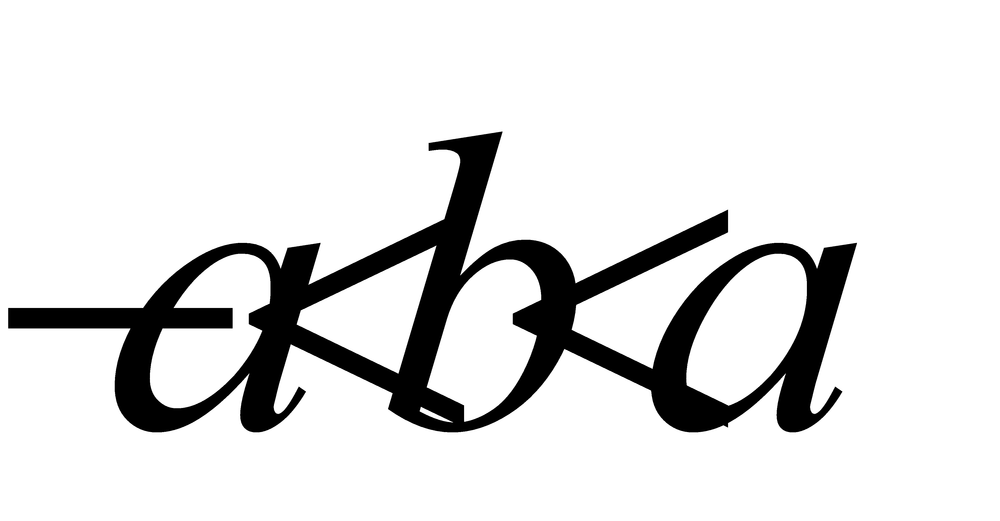
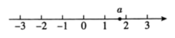
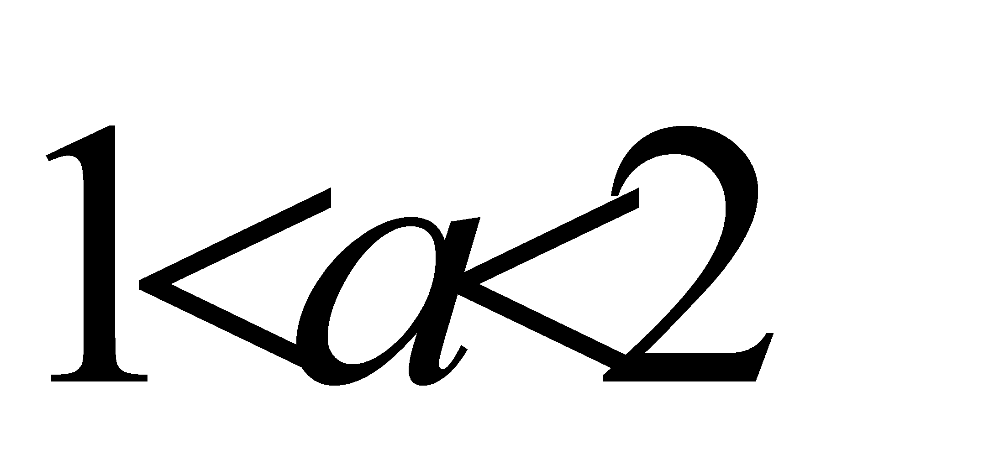
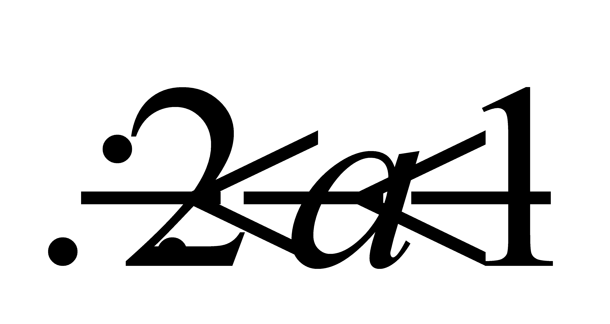
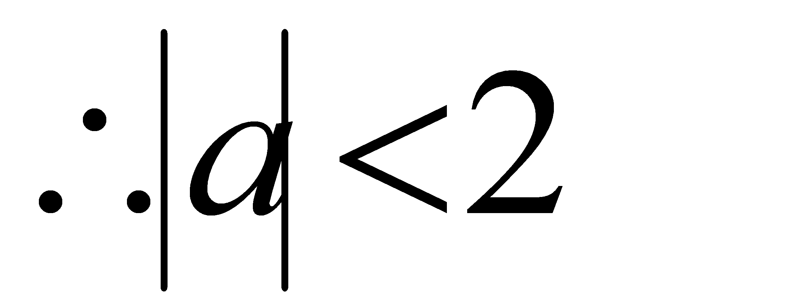
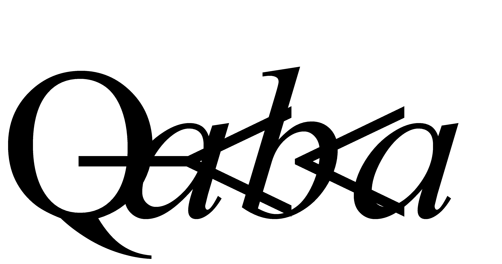
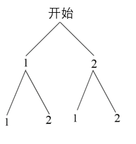
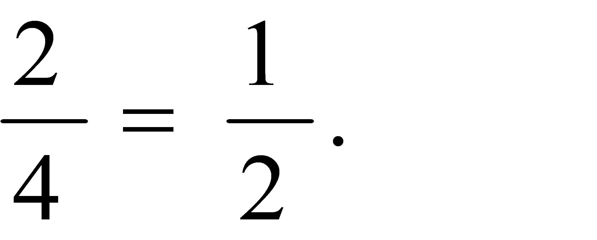
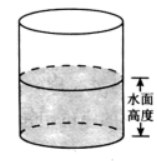
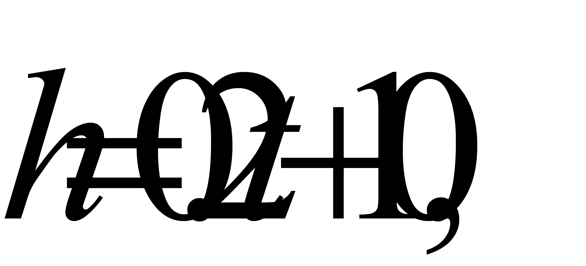

2020年北京市中考数学试题 · 选择题 第6、7、8题 · 对应解析
6.实数 在数轴上的对应点的位置如图所示．若实数
在数轴上的对应点的位置如图所示．若实数 满足
满足

，则的值可以是（ ）
A. 2B. -1C. -2D. -3
【答案】B
【解析】
【分析】
先根据数轴的定义得出a的取值范围，从而可得出b的取值范围，由此即可得．
【详解】由数轴的定义得：



又

到原点的距离一定小于2
观察四个选项，只有选项B符合
故选：B．
【点睛】本题考查了数轴的定义，熟记并灵活运用数轴的定义是解题关键．
7.不透明的袋子中装有两个小球，上面分别写着“1”，“2”，除数字外两个小球无其他差别．从中随机摸出一个小球，记录其数字，放回并摇匀，再从中随机摸出一个小球，记录其数字，那么两次记录的数字之和为3的概率是（ ）
A.  B.
B.  C.
C.  D.
D. 
【答案】C
【解析】
【分析】
先根据题意画出树状图，再利用概率公式计算即可．
【详解】解：画树状图如下：

所以共4种情况：其中满足题意的有两种，
所以两次记录的数字之和为3的概率是

故选C．
【点睛】本题考查的是画树状图求解概率，掌握画树状图求概率是解题的关键．
8.有一个装有水的容器，如图所示．容器内的水面高度是10cm，现向容器内注水，并同时开始计时，在注水过程中，水面高度以每秒0.2cm的速度匀速增加，则容器注满水之前，容器内的水面高度与对应的注水时间满足的函数关系是（ ）

A. 正比例函数关系B. 一次函数关系C. 二次函数关系D. 反比例函数关系
【答案】B
【解析】
【分析】
设水面高度为 注水时间为 分钟，根据题意写出
分钟，根据题意写出 与的函数关系式，从而可得答案．
与的函数关系式，从而可得答案．
【详解】解：设水面高度为 注水时间为分钟，
则由题意得：

所以容器内的水面高度与对应的注水时间满足的函数关系是一次函数关系，
故选B．
【点睛】本题考查的是列函数关系式，判断两个变量之间的函数关系，掌握以上知识是解题的关键．
二、填空题